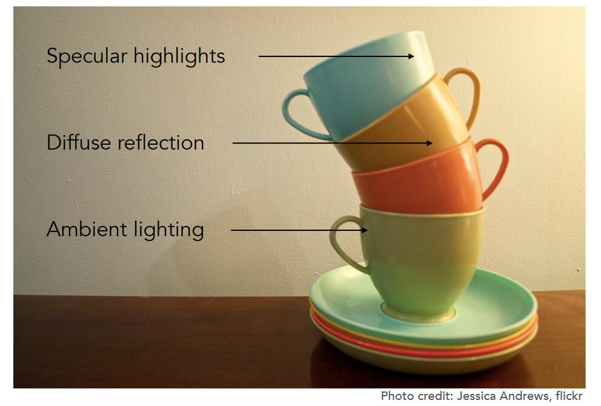
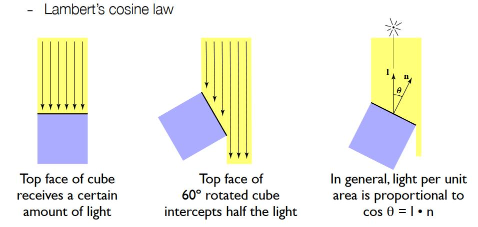
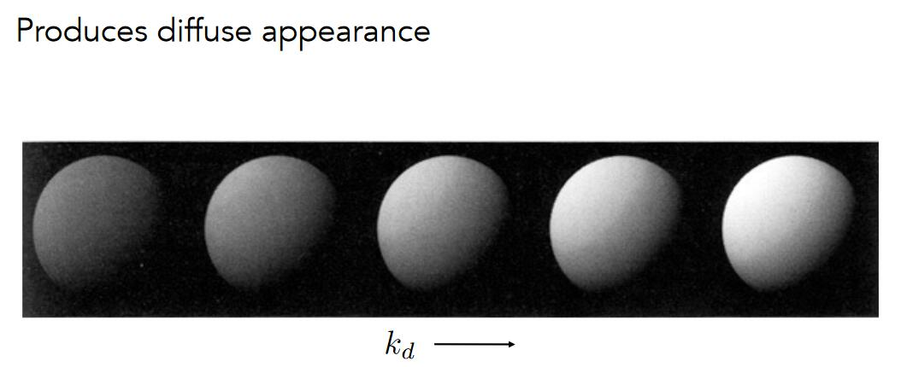
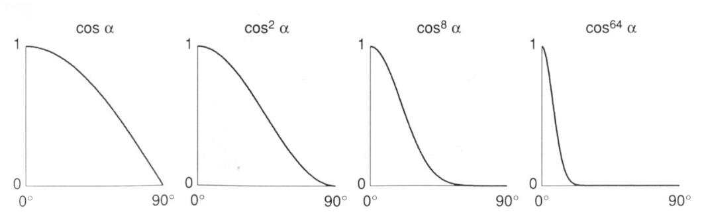
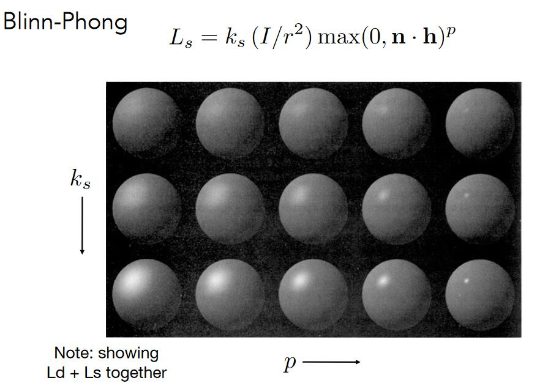
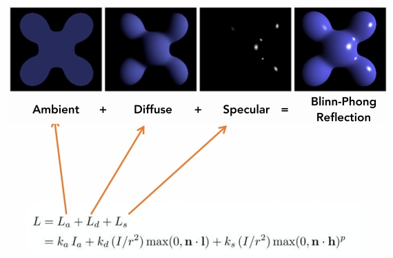
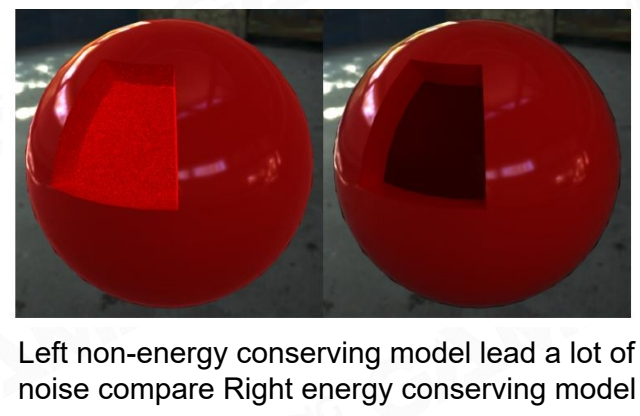
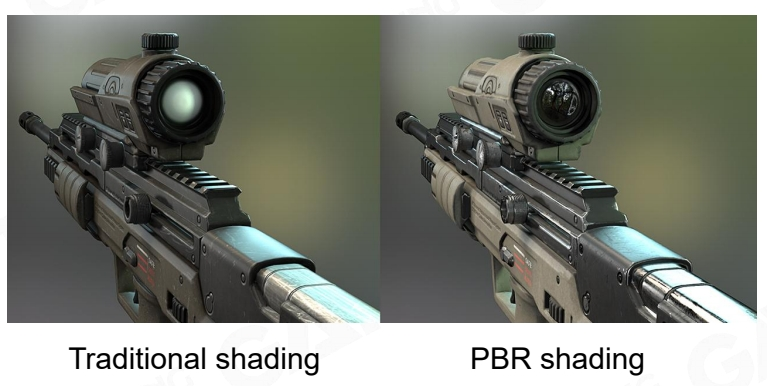

Blinn-Phong 反射模型
这是一个简单基础的模型，属于经验模型，并不完全符合物理。
它利用光的可叠加属性，将光分成了三种成分，分别针对这三种成分的光，模拟光源对物体（光与材质的积分结果）的作用。

- 高光(Specular highlights): 光线反射到镜面反射附近
- 漫反射(Diffuse reflection): 光线被反射到各个方向上
- 环境光(Ambient lighting): 假设任何一个点会接收到来自环境的常量的光
💡 问题简化抽象，可以快速得到近似的结果。
就像五行八卦就是对现实世界的抽象。
优点是：简化理解。
缺点是：不一定完全符合真实，用应用的局限性
$$ \begin{align*} L_0 &=\int (f_{BRDF}\cdot L_i)dw \\ & =\int (f_{BRDF}\cdot (L_a+L_d+L_s))dw \\ &=\int (f_{BRDF}\cdot L_a)dw+\int (f_{BRDF}\cdot L_d)dw+\int (f_{BRDF}\cdot L_s)dw \\ &=k_a+k_d+k_s \end{align*} $$
定义
- shading point：当前要计算着色的点，位于物体表面。物体在shading point处的属性包含color, shinness。
- （\(\hat{n}\)）Surface normal：假设点附近极小范围内是一个平面，n为平面指向外的法向量
- （\(\hat{v}\)）Viewer direction：观测方向
- （\(\hat{l}\)）Light direction：光源方向，与光照向point的方向相反
📌 \(\hat{l}\)如何计算？
光源的位置减去shading point的位置，得到向量，然后求出单位长度\(\hat{l}\)
三种成分
漫反射
漫反射的特点
- 打到 point 上的光线被均匀地反射出去（与观测点v没有关系）
- l 与 n 的夹角决定了 point 接收到的光线的强度(Lambert's cosine law)

👆 假设光线是离散的，可以看出，当表面倾斜时，它接收到的光线会变少。理解为接收到的光线的强度变少。
- 圆心是点光源，向外辐射能量。根据能量守恒定理（不考虑传播损耗），每个圆上的能量之和不变，因此某点处的能量与它到光源的距离平方是反比。
✅如果考虑三维空间，则应该是距离的立方。
漫反射项公式
通过以上分析，定义漫反射的能量公式为：
\[ L_d=k_d\left( I/r^2 \right) \max \left( 0,\boldsymbol{n}\cdot \boldsymbol{l} \right) \]
- \(L_d\)： shading point接收到的漫反射能量
- \(k_d\)： shading point对光的吸收率 (例如，不同的颜色对光的吸收能力不同)
- \(\left( I/r^2 \right)\)： 有多少能量到达了point
- \(\max \left( 0,\boldsymbol{n}\cdot \boldsymbol{l} \right) \)： 从正面照射的光，漫反射才有意义 （非正面射入，\(\boldsymbol{n}\cdot \boldsymbol{l}\)的值小于零）
- \(\boldsymbol{n}\cdot \boldsymbol{l}\)： 表示有多少能量被point接收
- 漫反射与观察者方向无关，因此公式中没有v的体现。
漫反射项的效果

高光项
高光的特点
R 为物体镜面反射的方向，当 v 和 R 接近时，会看到高光。
\(h=\frac{v+l}{||v+l||}\) 代表了 v+l 的方向， h 称为半程向量 half vector。 当v和R接近时，v+l 的方向(h)与n接近:
💡 为什么用\(n\cdot h\)代替\(v\cdot R\)？
因为\(n\cdot h\)更容易计算
高光项的公式
通过以上分析，定义高光项的能量公式为：
\[ L_s=k_s\left( I/r^2 \right) \max \left( 0, \cos \alpha \right) =k_s\left( I/r^2 \right) \max \left( 0, n\cdot h \right) ^p \]
- \(k_s\) 吸收率，通常认为高光是白色，也就是全吸收
- \(\left( I/r^2 \right)\) 表示有多少能量到达了point
- \(\max \left( 0, n\cdot l \right) ^p\) 表示n和h的接近程度
- \(L_s\) 同样应该考虑有多少能量被接收，但Blinn Phong模型将这个因素简化了
💡 公式中为什么会有指数p？
在保证函数趋势不变的同时，让高光更集中，通常取[100, 200]

高光项的效果
👆 漫反射项 + 高光项
Ks变大，高光变亮。p变大，高光范围变小。
环境光照项
Blinn Phong模型假设所有 point 接收到来自环境光的强度相同，且为常数:
\[ L_a=k_aI_a \]
与\(l\)和\(v\)无关
模型总述

💡 为什么不考虑point到v的距离对能量的影响？？
这部分比较复杂,Blinn-phong模型没有考虑这个问题
💡 解决复杂问题的几个方法：
- 把问题分解为子问题，降低复杂度
- 把问题从应用场景、难点等角度划分，每一部分针对其特点解决
- 问题近似、简化
Problem of Blinn-Phong
- Not energy conservative Unstable in ray-tracing

- Hard to model complex realistic material

本文出自CaterpillarStudyGroup，转载请注明出处。
https://caterpillarstudygroup.github.io/GAMES101_mdbook/